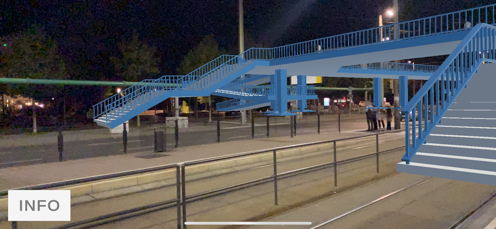

Blaues WundAR
Maix Mayer (Leipzig)

Als Leipziger beteiligte sich Maix Mayer aktiv an den Montagsdemonstrationen 1989 auf dem Leipziger Ring und dokumentierte dies per Video. Der wichtigste Standpunkt für die mediale Dokumentation der Demonstrationen war die 2004 abgerissene Fußgängerbrücke, von den Leipzigern „Blaues Wunder“ genannt. Mittels Augmented-Reality (AR) wird das Bauwerk im Stadtraum am alten Ort wieder erlebbar.
Die App „Blaues WundAR“ errichtet die Brücke virtuell wieder und macht so das „Blaue Wunder“ zum WundAR. Via eingeschalteter Handykamera entsteht eine Überlagerung des Livemodus mit einer 3D-Animation der Brücke.
Erlebe die virtuelle Brücke
Hier kannst du die Brücke mittels Augmented Reality direkt auf deinem Smartphone erleben
Vor Ort ausprobieren

Das Blaue WundAR kann vor Ort am Goerdelerring während des Leipziger Lichtfestes 2024 ausprobiert werden. Begib dich dafür an die Stationen vor Ort und lass die virtuelle Brücke in ihrer alten Position wiederauferstehen.
Weitere Informationen zur Veranstaltung findest du hier.